Landscape
First. Data makes it understandable.
First. Data makes it understandable.
Digital Land Intelligence · ThailandKoh Phangan · Koh Samui · Phuket
The problem
Terrain is often misunderstood
People lose money before construction even starts. A slope read wrong, drainage missed, a boundary assumed — each becomes an expensive change on site.
EASY SCAN02
EASY SCAN03
Site · demo data
The Hill

Understand the land before you build.
lidareasyscan.comLandscape First.